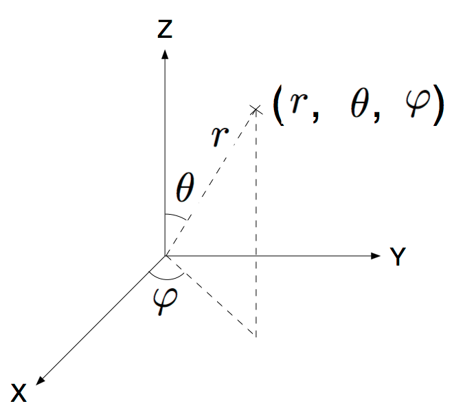
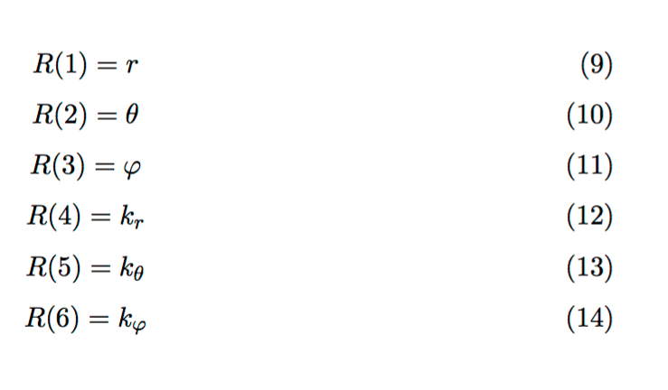
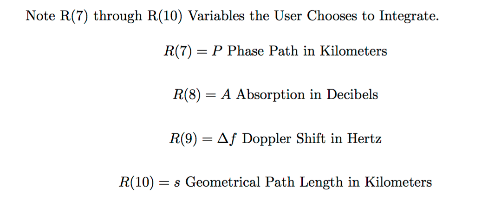

|
|---|
Ray Tracing Through the IONOSPHERE
Open Source Mathematica ® Code
Ray Tracing Through the IONOSPHERE FORTRAN Code. Click Here.For Description Click Here
Case |
Description | Code | WEB View | Result Plots |
|---|---|---|---|---|
1 |
Mathematica® Notebook for Ray Tracing Radio Waves Through the IONOSPHERE. Based on the original FORTRAN Code in [Jones, Stephenson, 1975]. GPL version 3 . | Notebook | HTML | 1- Ray Path Through IONOSPHERE View 1 2- Ray Path Through IONOSPHERE View 2 |
2 |
FORTRAN Code for Ray Tracing Radio Waves Through the IONOSPHERE. Cleaned up and debugged from Scan and OCR of [Jones, Stephenson, 1975] Original CDC Mainframe FORTRAN. Compiles with gfortran. Note: Use a Professional Compiler until some issues with gfortran need to be resolved. | FORTRAN | -- | |
3 |
Simulation Results. Matrix of all Ray Vectors ( 800 iterations) one ray trace case. Elevation 45 degrees. See ray.dat. | -- | -- | |
| Parameter text file. Place in same directory as Mathematica® Notebook. | (1) ray.dat (2) ray.csv |
-- | -- | |
5 |
Latex File for Hamiltonian, Derivatives and Symbol Table | -- |
{kind=link}
{kind=link}
{kind=link}
{kind=link}
{kind=link}
{kind=link}
{kind=link}
Tools
Item |
Description | Code | WEB View | Graphic |
|---|---|---|---|---|
1 |
Tools for Postprocessing Ray Matrix from Ray Trace Mathematica® Notebook. Propagation Vector. | Notebook | HTML | Propagation Vector |
2 |
Tools for Postprocessing Ray Matrix from Ray Trace Mathematica® Notebook. Ray Trace Curve. | Notebook | HTML | Two Hop |
3 |
Mathematica® Code for FORTRAN PRINTR Routine. Work in Progress. Incomplete. | Notebook | HTML | Preliminary |
{kind=link}
References:
1- R. Michael Jones, Judith J. Stephenson, A Versatile Three-Dimensional Ray Tracing
Compute Program for Radio Waves in the Ionosphere, OT Report 75-75, US Department of Commerce, October 1975  PDF Report.
PDF Report.
Description
Ray Trace Through the IONOSPHERE Mathematica® Notebook
Copyright (C)2018 Sasan Ardalan
This program is free software:you can redistribute it and/or modify it under the terms of the GNU General Public License as published by
the Free Software Foundation,either version 3 of the License,or at your option) any later version.This program is distributed
in the hope that it will be useful, but WITHOUT ANY WARRANTY
without even the implied warranty of
MERCHANTABILITY or FITNESS FOR A PARTICULAR PURPOSE.
See the
GNU General Public License for more details.You should have received a copy of the GNU General Public License along with this program.
If not, see<http://www.gnu.org/licenses/>.
Author:Sasan Ardalan
Date:December 22,2018
http://www.radiocalc.com
The Mathematica® Code is based on the FORTRAN Code by [Jones, Stepehnson, 1975]. See Reference above.
The Code was scanned and OCR'd (back in 2002). The corrections took a major effort. Debugged more in December 2018. Obviously a very error prone procedure. The code in the OT Report 75-76 had some issues related to porting from a CDC Mainfram to gfortran.
Also the CDC FORTRAN allowed for some non standard variable persistance between subroutine calls. Also some assignments were fixed especially for DRDT(1).
A debug option with extensive reporting on computations was added.
The routine POL CAR was modified.
The Mathematica® code eliminates all the FORTRAN GO TO statements. Also one
gets a better view of global variables.Mathematica® uses color coding on variables (local global).
The Mathematica® Modules hopefully clear up what variables are global. Will be nice to elliminate most global variables (except the W Array) from the code.
The Mathematica Code is a great basis for porting to Java and other Programming languages ( we have eliminated the Go TO's as stated before plus extensive work for structured programming).
The effort is to capture the setup used by Jones and Stephenson.
With Mathematica® vast 3D Graphing capabilties are available as well as 2-D Graphing. Also easy to access Matrices and Arrays for analysis. At any rate getting the excellent work by Jones and Stephenson into Mathematica® opens up a huge opportunity for Research and Development in the area of Ray Tracing through the IONOSPHERE.
Note in FORTRAN Code Elevation at 90 Degrees is Vertical.
The GPL Copyright applies to the Mathematica® Code.

Spherical Coordinates

Hamiltonian and Derivatives

Ray Vector

Ray Vector Options

Usage Guidance
The code is written so
one ray launch is analysed.
Set the Elevation and Azimuth and the Transmitter Longitude and Lattitude. All key parameters including above read through the test file:
ray.dat ( Mathematica® Reads the CVS file ray.csv that we have prepared based on the original ray.dat file).
This is the same file used by Jones and Stephenson.
Earth Radius set in the code:
EARTHR=6370. ; W[[2]]=EARTHR;
The Mathematica® code uses the W array as in the FORTRAN code as a database of parameters just as in Jones and Stephenson
Set the maximum iterations in the TraceRT routine loop:
MAXITERATIONS
Multi Hop is different than Jones and Stephenson since we only use the Iterations loop.
The results are store in the matrix: RayMatrix which is stored in a file using Mathematica®:
Export["RayMatrix.wdx",RayMatrix];
This way the ray information (state vector) is available for Post Processing.
We have also translated the Subroutine PRINTR to Mathematica® code.
There are some issues with Fortran ATAN2 and Mathematica ArcTan so this is a work in progress.
The Mathematica® Notebook implements one case out of many possible models as explained in Jones and Stephenson.
Hopefully, by following the Mathematica code, one can substitute various models as outlined in Jones and Stephenson.